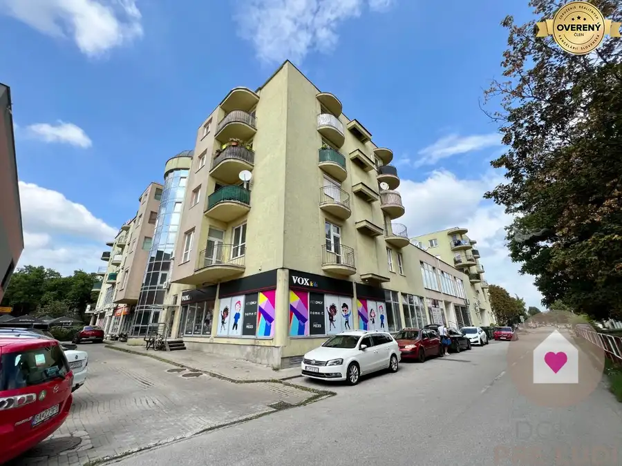
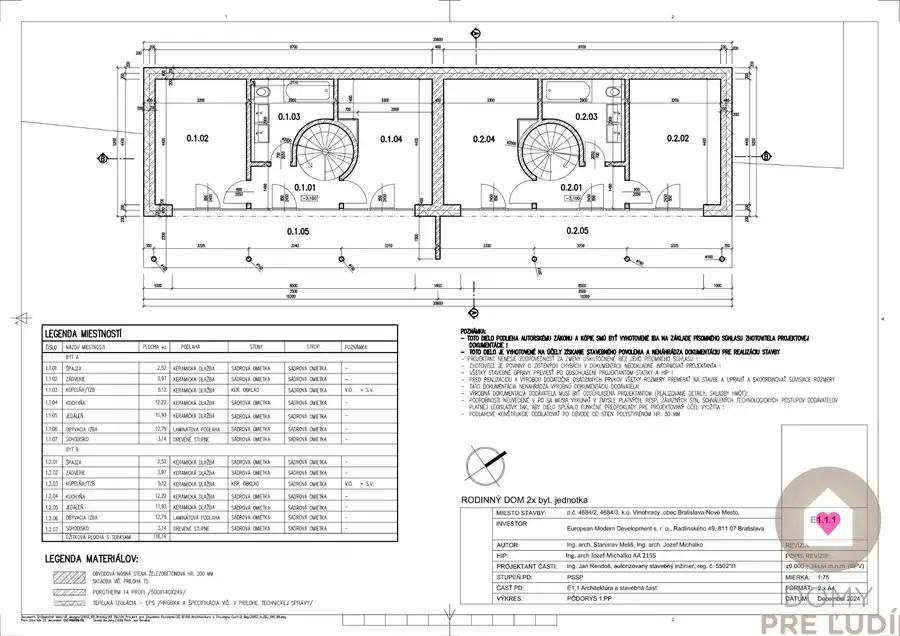
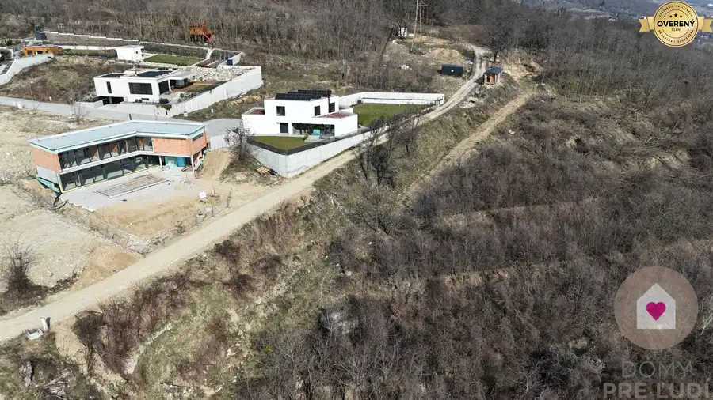
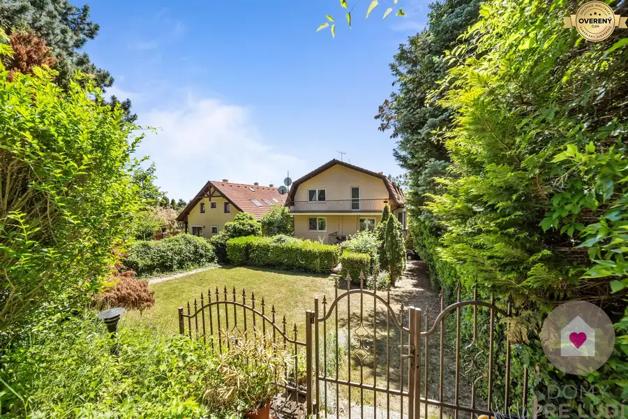
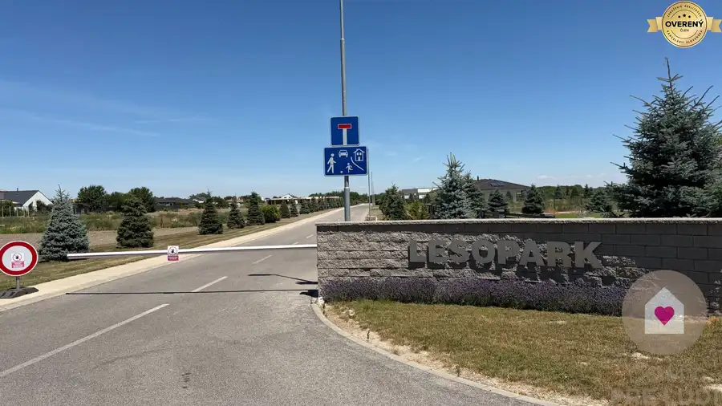
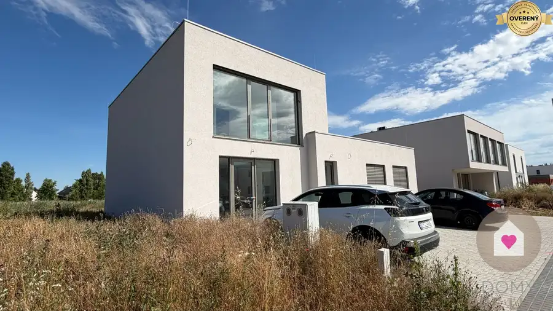
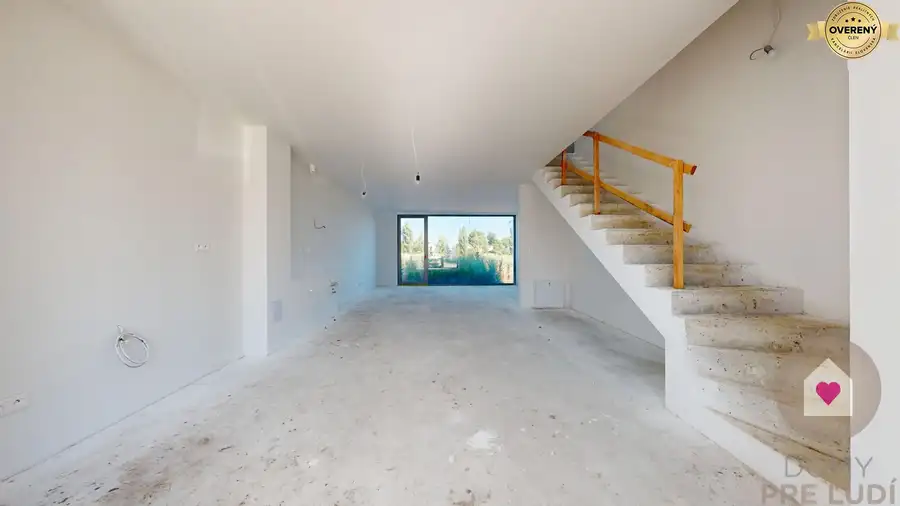
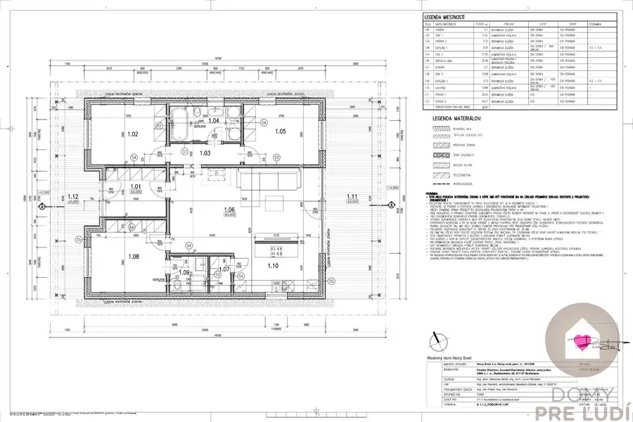
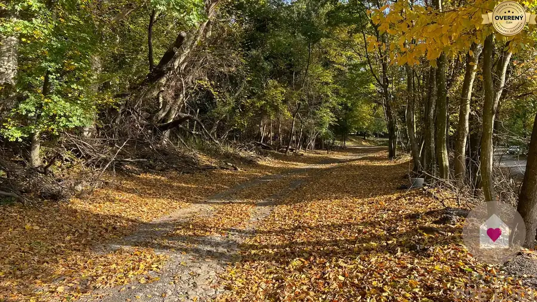
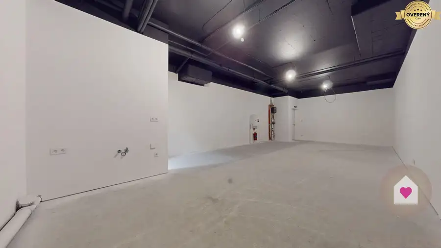

Aktuálna ponuka
Nehnuteľnosti, ktoré ponúkam
11 nehnuteľností na predaj a prenájom. Vyberte typ, alebo napíšte lokalitu.
11 z 11 ponúk

Nebytové priestory10 239 990 €GA/CENTRUM - Veľký obchodný priestor o výmere 337m2 s parkovaním Galanta 337.15 m²1. podlažie Exkluzívne ponúkame na predaj obchodný priestor v obchodnom centre GALAXIA na Hlavnej ulici v Galante. Priestor sa nachádza v centre mesta je dobre…
Rodinné domy7 699 000 €Ahoj Briežky | výnimočné bývanie na rozhraní Mesta a prírody Ahoj, Bratislava 4-izbový127.2 m² Projekt Ahoj Briežky predstavuje moderný 4-izbový rodinný dom situovaný v architektonicky riešenom dvojdome, rozdelenom na dve samostatné bytové…
Rodinné domy6 799 990 €Ahoj Briežky | samostatný rodinný dom v dotyku s prírodou Nové Mesto, Bratislava 4-izbový129.4 m² V projekte Ahoj Briežky ponúkame na predaj moderný samostatne stojaci rodinný dom, ktorý je aktuálne v štádiu prípravy výstavby. Nehnuteľnosť bude…
Developerské projekty10 1 580 000 €KARLOVA VES- Vila s investičným potenciálom a tromi samostatnými bytmi Karlova Ves, Bratislava 12-izbový547.44 m² 547,44 m² úžitkovej plochy | Pozemok 911 m² | 3 samostatné 4-izbové byty | Garáž pre 3 vozidlá HLAVNÉ BENEFITY * Úžitková plocha domu 547,44 m² +…
Pozemok8 420 000 €Stavebný pozemok na predaj – Kvetoslavov, 2 500 m² - súkromná ulica Kvetoslavov 2500 m² Realitná kancelária Domy pre ľudí ponúka na predaj priestranný pozemok s celkovou výmerou 2 500 m² , nachádzajúci sa v súkromnej uličke na Lesnej…
Rodinné domy10 259 990 €KRÁĽOVÁ PRI SENCI – SKOLAUDOVANÁ novostavba 4-izbového RD, záhrada 167 Kráľová pri Senci 4-izbový118.96 m² Exkluzívne ponúkame na predaj skolaudovaný 4-izbový rodinný dom v novej rezidenčnej lokalite Krmeš v obci Kráľová pri Senci. Dom je súčasťou…
Rodinné domy10 285 000 €KRÁĽOVÁ PRI SENCI – SKOLAUDOVANÁ novostavba 4i RD v štandarde Kráľová pri Senci 4-izbový118.96 m² Exkluzívne ponúkame na predaj skolaudovaný 4-izbový rodinný dom v novej rezidenčnej lokalite Krmeš v obci Kráľová pri Senci. Dom je súčasťou…
Rodinné domy10 245 000 €NOVY SVET - SKOLAUDOVANÝ rodinný dom s terasou a parkovaním Nový Svet 4-izbový98.39 m² Ponúkame na predaj skolaudovanú novostavbu rodinného domu v novej a rýchlo sa rozvíjajúcej lokalite Nový svet. Dom je navrhnutý ako moderná,…
Pozemok10 115 000 €Pozemok o rozlohe 1100 m2 v krásnej lokalite Borinka, okres Malacky Borinka 1100 m² Realitná kancelária Domy pre ľudí ponúka na predaj pozemok o výmere 1 100 m² v tichej a vyhľadávanej lokalite Borinka, okres Malacky. Pozemok sa… Rodinné domy10
1 580 000 €KARLOVA VES- Vila s investičným potenciálom a tromi samostatnými bytmi
Karlova Ves, Bratislava
12-izbový547.44 m²
547,44 m² úžitkovej plochy | Pozemok 911 m² | 3 samostatné 4-izbové byty | Garáž pre 3 vozidlá HLAVNÉ BENEFITY * Úžitková plocha domu 547,44 m² +…
Rodinné domy10
1 580 000 €KARLOVA VES- Vila s investičným potenciálom a tromi samostatnými bytmi
Karlova Ves, Bratislava
12-izbový547.44 m²
547,44 m² úžitkovej plochy | Pozemok 911 m² | 3 samostatné 4-izbové byty | Garáž pre 3 vozidlá HLAVNÉ BENEFITY * Úžitková plocha domu 547,44 m² +…

Nebytové priestory10 Cena dohodouPriestor 60 m² | Jarabinky – Ružinov | sklad / e-shop / výdajné miesto Ružinov, Bratislava 60 m² Realitná kancelária Domy pre ľudí ponúka na prenájom priestor s výmerou 60 m² v atraktívnej lokalite Bratislava – Ružinov, v projekte Jarabinky na…Tomuto výberu zatiaľ nezodpovedá žiadna ponuka. Napíšte mi, čo hľadáte.